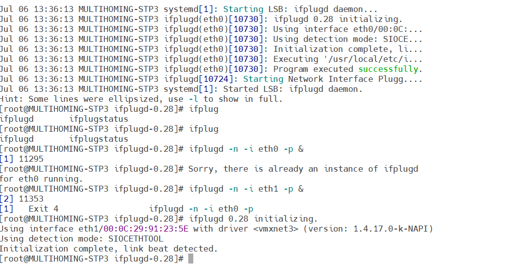
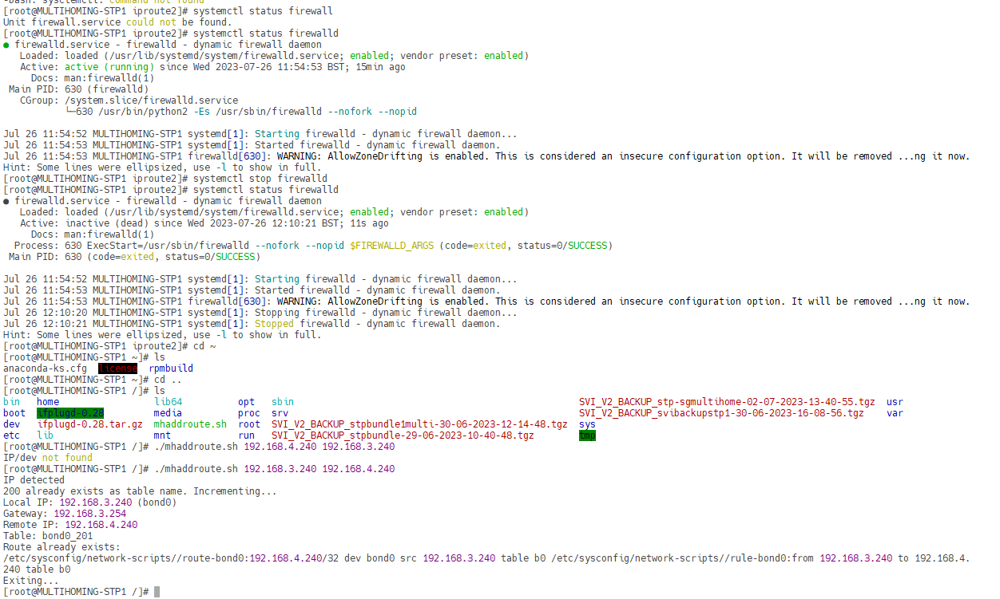
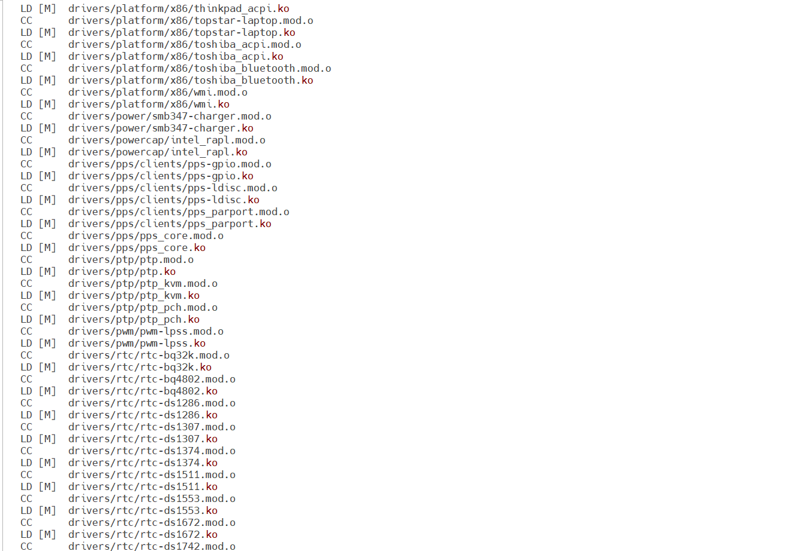
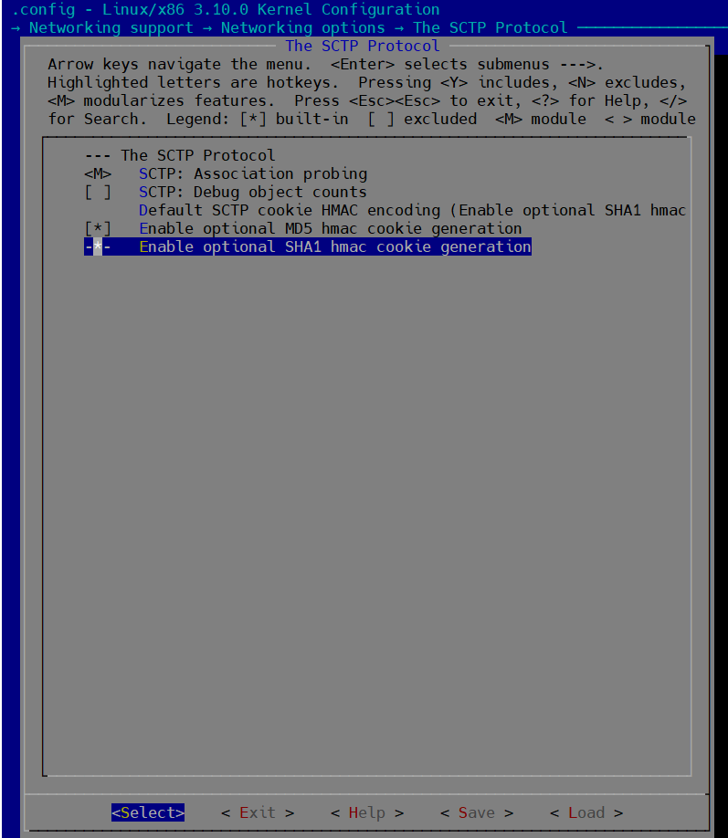
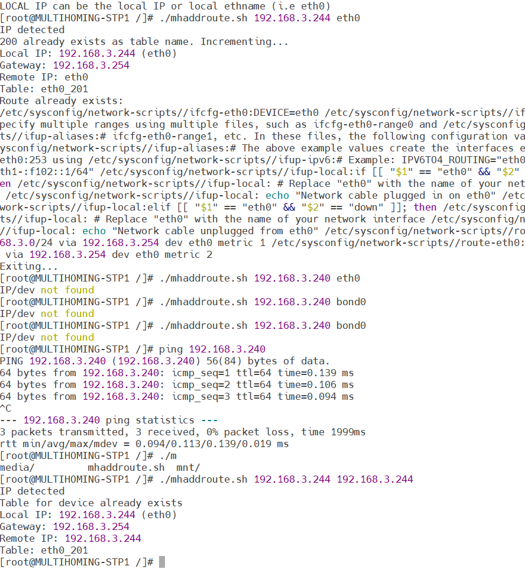
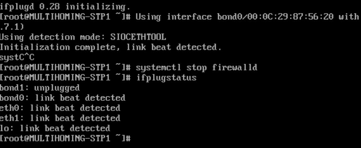

Lab Overview
- Topic: SCTP Multihoming
- Platform: VMware vSphere 3.145
- Protocol: SIGTRAN (SCTP)
- Use Case: STP Redundancy
- Author: Awash Maskey
Building a Multihomed STP Lab Using SCTP on VMware vSphere
This article documents a hands-on lab built to demonstrate SCTP multihoming for STP redundancy using two isolated networks on VMware vSphere. The objective was to validate heartbeat monitoring, path failover, and service continuity without interface bonding or cross-IP routing.
Lab Architecture Overview
Two STP nodes (Local and Remote) were deployed with dual network interfaces, each connected to separate Layer-3 networks. Each interface was configured as a primary or secondary SCTP path.
Network Configuration
Local STP Node
- NIC 1 (Primary): Network 3 – 192.168.3.240 /24, GW 192.168.3.254
- NIC 2 (Secondary): Network 4 – 192.168.4.240 /24, GW 192.168.4.254
Remote STP Node
- NIC 1 (Primary): Network 3 – 192.168.3.241 /24, GW 192.168.3.254
- NIC 2 (Secondary): Network 4 – 192.168.4.241 /24, GW 192.168.4.254
Kernel and SCTP Configuration
- Custom Linux kernel built with SCTP debug enabled
- Successful ICMP reachability across:
- Network 3 ↔ Network 3
- Network 4 ↔ Network 4
- Network 3 ↔ Network 4 (without cross-IP routing)
- SCTP heartbeat interval set to 15000 ms
rp_filter=2configured for strict reverse path forwarding
Routing Design
- No interface bonding used
- Separate routing tables created for each network path
- Metrics applied to control preferred paths
- IP rules added to map traffic to the correct routing tables
Traffic Injection and Validation
- SIGTRAN traffic successfully injected between STP nodes
- PCAP captures confirmed SCTP heartbeat exchange across both interfaces
- Heartbeat observed switching between primary and secondary paths
Failover Testing
To validate resilience, the SVI was restarted and the vNICs were temporarily disabled at the hypervisor level. During this event:
- All SCTP associations transitioned out of service
- After re-enabling vNICs, SCTP associations recovered automatically
- Heartbeat and ICMP traffic resumed on both primary and secondary paths
Conclusion
This lab successfully demonstrated SCTP multihoming behavior in a virtualized STP environment. By using multiple interfaces, routing policies, and SCTP heartbeat monitoring, high availability was achieved without interface bonding. This setup closely reflects real-world telecom-grade redundancy and failover requirements.